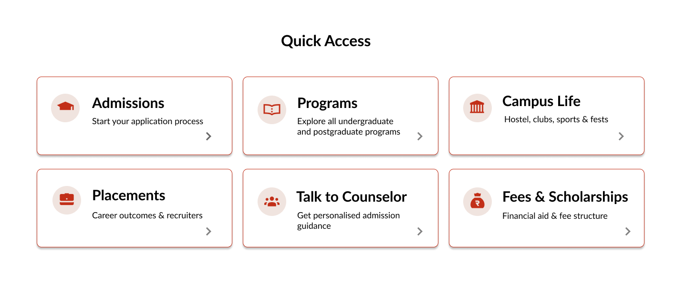
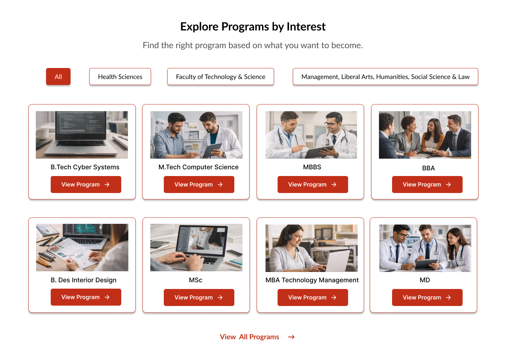
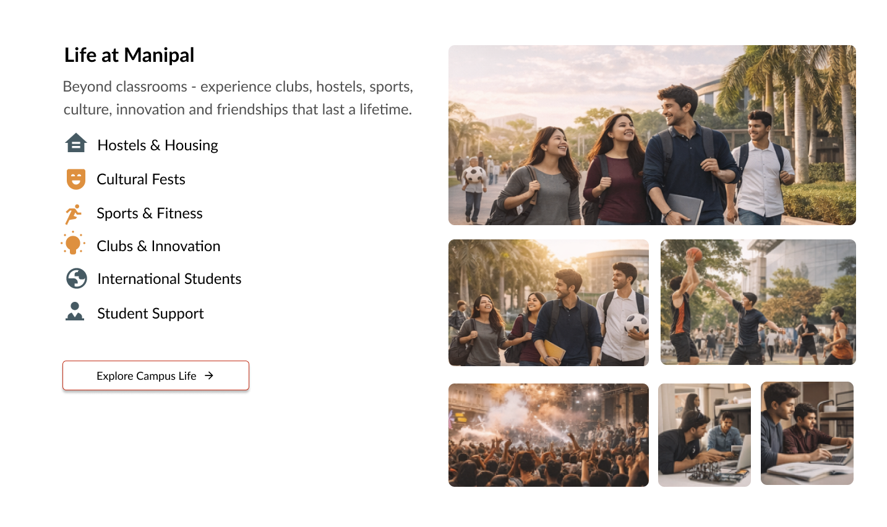
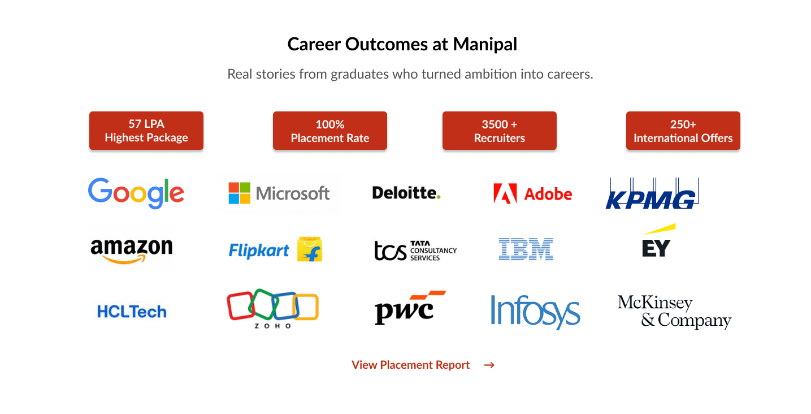
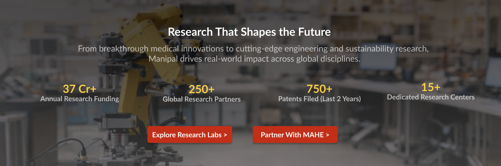
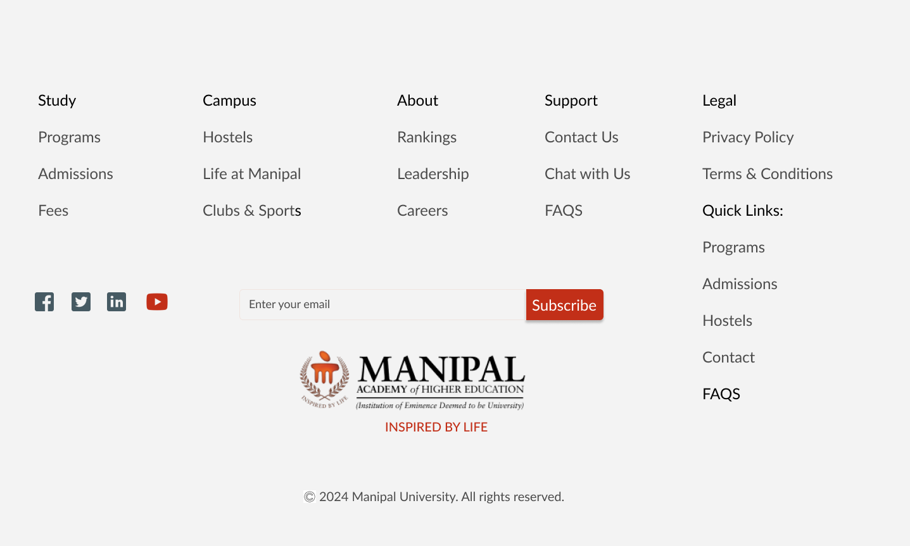

A strategic UX redesign exploration focused on improving homepage clarity, information architecture, and program discovery for prospective students.
The homepage serves multiple user groups — prospective students, parents, international applicants, and alumni. Over time, content expansion often leads to clutter and diluted hierarchy.
This redesign focused on restructuring the homepage to reduce cognitive overload while improving discoverability and decision clarity.
Before: Content-heavy layout
After: User-intent driven flow
Hero → Quick Access → Programs → Trust Signals → Research → Global → Testimonials → Final CTA






Primary CTA hierarchy with focused user pathways
Improved program discovery through structured grouping
Reduced cognitive overload with better whitespace and layout rhythm